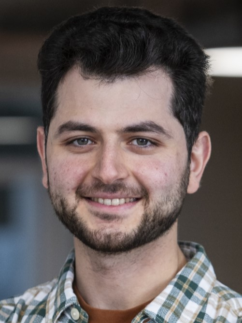

Computer and Data Scientist
Hello! ألسلام غليكم! Servus! Merhaba! I'm Omran Kaddah, a passionate Computer Scientist and Data Scientist based in Munich, Germany. I have 5 years of professional expereince in Machine Learning and almost 4 years as Data Scientist. I have been programming for more than 14 years, starting with C/C++ in late high school. Over the years, I have explored various programming languages and technologies, including Python, Julia, and C#. My passion for problem-solving and analytical thinking has driven me to continuously learn and adapt to new challenges. Even in my free time, I enjoy engaging my mind with mentally challenging tasks, particularly those involving problem-solving and analytical or algorithmic thinking. This makes such challenges a natural fit in my professional work as well. Throughout the past few years, I have gained significant experience in Machine Learning, AI Engineering, data analysis and engineering at Unite. During my Master's at TU Munich, I specialized in Computer vision and Machine Learning, focusing on clustering algorithms applied to real-world and graph data during my thesis. Other than that, I possess extensive knowledge in various fields of Computer Science.
C++23 unified Async-first SDK and local proxy for multiple LLM providers. Local OpenAI-compatible proxy endpoints for chat, embeddings, and models. Optional C++ module interface units for faster consumer imports.
View on GitHubA Python-based agent workflow that automates the curation of newsletters by scouring the internet for the latest news, tutorials, blog posts, and academic papers on any specified topic.
View on GitHubThis repository implements and compares multiple graph neural network approaches for community detection, including Vecoder with modularity loss, hierarchical pooling methods (DiffPool, Min-cut), and overlapping community detection using AGM. Experiments across multiple datasets showed that Vecoder-based methods outperformed traditional pooling approaches, achieving NMI scores of 0-0.2 compared to near-zero performance from hierarchical clustering methods.
View on GitHubA C++ project focused on multi-object tracking in driving scenarios, designed for robust real-time performance in complex environments.
View on GitHubA Python project exploring disentangled representation learning to separate underlying factors of variation in data.
View on GitHubA C++ project implementing 6 Degrees of Freedom (6DoF) tracking for a VR headset by solving the Perspective-n-Points problem using multiple distinctive markers.
View on GitHubJulia (DataFrames.jl), Python (Tensorflow, boto, Pandas, DuckDB, numpy, scikit-learn, langchain, LangGraph, huggingface, peft, transformers, spaCy, PydanticAI), MCP, SQL, aws(SageMaker, Bedrock, ECS/2, Athena, CodePipeline, CloudFormation Templates & cdk -IaC), vLLM, VectorDB (aws OpenSearch, Typesense), Terraform, dagster, Gitlab CI/CD, Docker, VectorDB (aws OpenSearch, pinecone), Java and Maven.
Other: C/C++, PyTorch, OpenCV, FastAPI
Arabic, English, German, and Turkish (Basic).
Guitar, Classical Music, Bouldering, Podcasts, Pub quizzes, and Hiking.